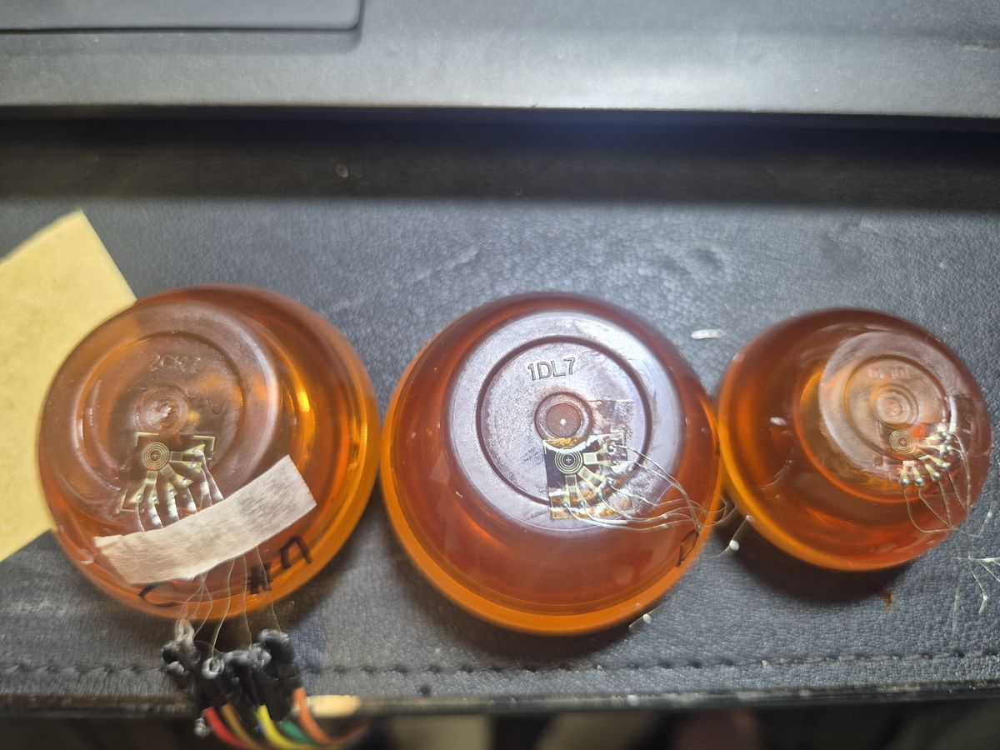
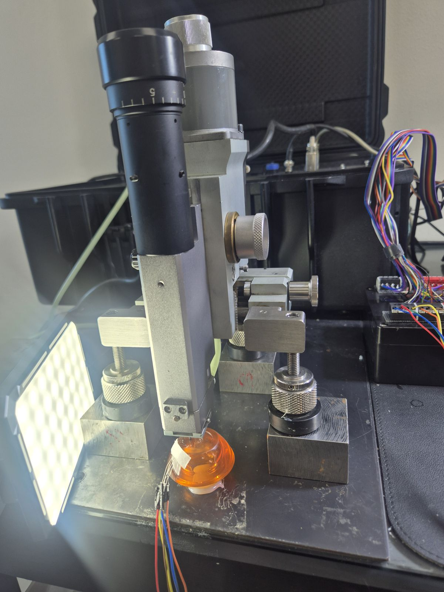
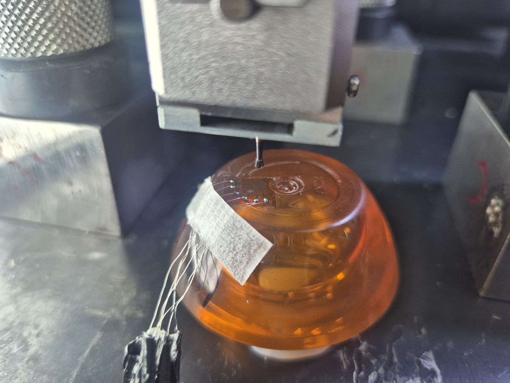
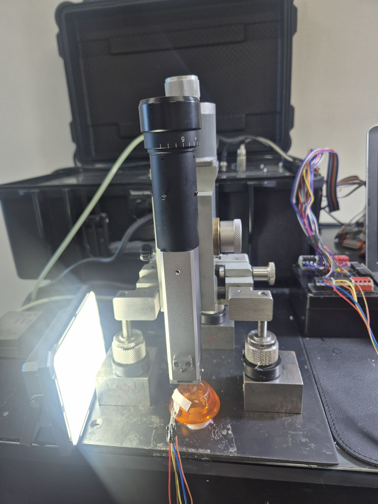
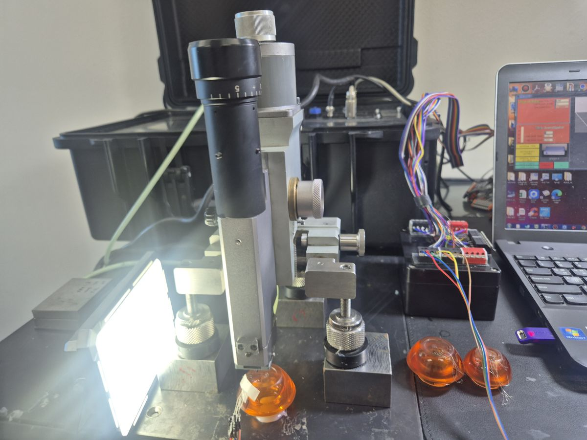
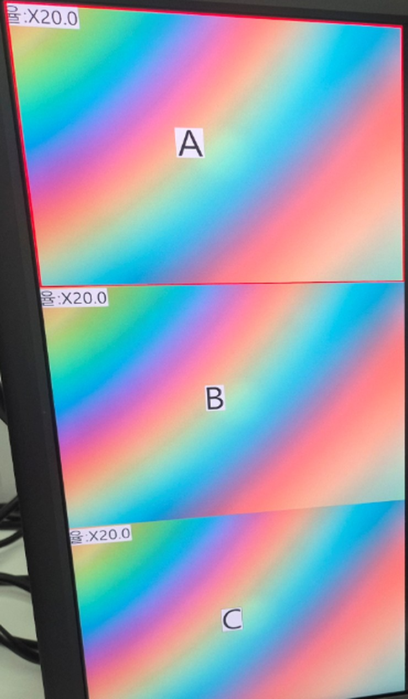

플라스틱 잔류응력 측정
화장품 용기 잔류응력 분석 사례
SAN 82TR 화장품 용기 3품목의 바닥면 게이트부를 홀드릴링으로 측정하고, 사출 조건·항온 테스트 이력·냉각 조건에 따른 잔류응력 차이를 편광 필터 관찰 데이터와 함께 비교한 분석 사례입니다.
바닥면 게이트부 측정
· 자연 냉각 조건
홀드릴링 수치 비교
분석 개요
사출 성형품은 냉각 과정의 속도 차이 때문에 내부에 잔류응력이 남기 쉽고, 특히 수지가 유입되고 보압이 가해지는 게이트부는 사출 조건의 영향이 크게 나타나는 부위입니다. 이번 사례는 SAN 82TR 소재의 투명 화장품 용기를 대상으로, 사출 조건과 후처리 이력이 다른 3품목의 바닥면 게이트부에 각각 로제트를 부착해 홀드릴링으로 측정했습니다.
| 품목 | 사출 조건 | 후처리 이력 | 측정 위치 |
|---|---|---|---|
| A | 사출 조건 ① (보압 조건 상이) | 항온 테스트 샘플 | 바닥면 게이트부 1포인트 |
| B | 사출 조건 ② | 항온 테스트 샘플 | 바닥면 게이트부 1포인트 |
| C | 사출 조건 ② (B와 동일) | 자연 냉각 샘플 | 바닥면 게이트부 1포인트 |
※ 사출업체와 구체적인 공정 수치는 게재하지 않고, 조건의 상대적 차이만 표기했습니다.


조건별 비교 구성
세 품목을 아래와 같이 조합해 비교하면 사출 조건과 후처리 이력 각각의 영향을 분리해서 볼 수 있습니다.
| 비교 조합 | 달라진 조건 | 확인하려는 내용 |
|---|---|---|
| A ↔ B | 사출 조건(보압 조건) | 보압 조건 차이가 게이트부 잔류응력에 미치는 영향 |
| B ↔ C | 항온 테스트 이력 / 냉각 조건 | 환경 시험 이력 유무에 따른 잔류응력 변화 |
| A ↔ C | 사출 조건 + 후처리 이력 | 두 가지 조건이 함께 달라졌을 때의 전체 차이 |
계측 절차
품목마다 같은 위치, 같은 방법으로 측정해야 조건 간 비교가 의미를 가집니다. 로제트를 부착한 뒤 용기를 고정하고 홀드릴링 장비로 단계별 변형률을 기록했습니다.




편광 필터 데이터와의 비교
투명 성형품은 편광 필터로 보면 응력이 걸린 부위가 색 줄무늬로 나타납니다. 이번 사례에서도 3품목의 편광 필터 관찰 이미지가 있었고, 이 분포를 홀드릴링 수치와 함께 비교했습니다. 편광 필터는 전체 분포를, 홀드릴링은 특정 지점의 값을 알려 주기 때문에 서로 보완되는 데이터입니다.

| 구분 | 편광 필터 관찰 | 홀드릴링 측정 |
|---|---|---|
| 정보 | 응력 분포를 줄무늬(색 무늬)로 표시 | 한 지점의 잔류응력 크기·방향 수치 |
| 범위 | 용기 전체를 한눈에 확인 | 지정한 위치(이번 사례는 게이트부) |
| 성격 | 정성적 비교, 응력 집중 부위 탐색 | 정량 값, 조건 간 수치 비교 |
| 활용 | 측정 위치 선정, 분포 경향 파악 | 편광 분포 해석의 정량 근거 |
이렇게 두 데이터를 함께 보면, 편광 줄무늬로 확인한 분포 경향이 실제 잔류응력 값과 어떻게 대응하는지 확인할 수 있고, 조건이 달라진 샘플끼리의 차이를 정성과 정량 양쪽에서 뒷받침할 수 있습니다. 한 번 상관관계를 확인해 두면 이후에는 편광 관찰로 1차 선별하고 필요한 샘플만 홀드릴링으로 정량 측정하는 방식으로 활용할 수도 있습니다.
측정으로 확인할 수 있는 데이터
홀드릴링 측정 결과로 아래 값을 얻을 수 있으며, 사출 조건·냉각 조건·항온 테스트 이력이 다른 샘플끼리 같은 위치에서 비교하는 데 활용합니다.
※ 측정값은 시편 형상과 측정 위치에 따라 달라지므로 비교할 때는 동일 위치, 동일 방법을 유지합니다.
지원 역량 및 서비스 범위
씨앤디테크는 SINT MTS3000 고분자 전용 모드로 플라스틱 성형품의 잔류응력을 측정하며, 시편 형상에 맞는 고정 방법과 측정 위치 선정, 조건별 비교 해석까지 지원합니다.
관련 기술 자료 더 보기:
자주 묻는 질문 (FAQ)
플라스틱 용기 잔류응력 분석 관련 질문
플라스틱 잔류응력 측정 문의
시편 소재, 형상, 측정 목적(사출 조건 비교, 후처리 효과 확인 등)을 알려주시면 측정 방법과 일정을 안내해 드립니다. 현장 출장 측정도 지원합니다.